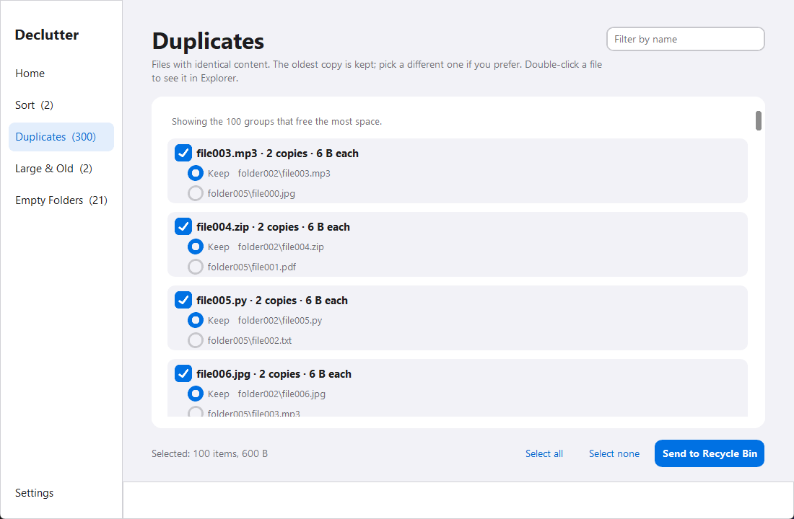
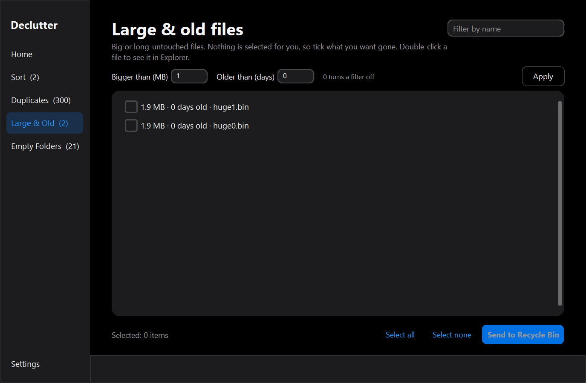

Tidy a messy folder without losing a thing.
Declutter sorts loose files into folders and finds duplicates, big old files and empty folders. It shows you every change first, and anything it removes goes to the Recycle Bin.
Free and open source, for Windows 10 and 11. No account, no ads, nothing sent anywhere.
- JPGIMG_2041 (1).jpg3.2 MB
- EXEZoomInstaller.exe17 MB
- PDFreport FINAL (2).pdf840 KB
- ZIPphotos-backup.zip1.1 GB
- PNGScreenshot 2026-03-14.png412 KB
- DOCLease agreement.docx96 KB
- MSIpython-3.12.10.msi26 MB
- JPGIMG_2041.jpg3.2 MB
- XLSbudget 2026.xlsx58 KB
9 loose files
One scan, four kinds of clutter
- Loose files
- Moves them into Images, Documents, Videos, Audio, Archives, Installers, Code and Other. If you change your mind, Undo puts every file back.
- Duplicates
- Finds files with identical content, even under different names. The oldest copy is kept unless you pick another.
- Large and old files
- Lists files over a size you choose, or untouched for a number of days. Nothing is ticked for you.
- Empty folders
- Finds folders with nothing inside, however deep they go.
It asks before it touches anything
- You see every change first.Each list shows exactly what will happen, and nothing moves until you confirm the count.
- Nothing is permanently deleted.Removed items go to the Recycle Bin, so you can restore them from there.
- Sorting can be undone."Undo last sort" moves files back to where they were.
- System folders are off limits.Windows, Program Files, AppData, your home folder and whole drives are refused. Hidden files and linked folders are skipped.
Looks at home in light and dark


Install in a minute
- Download Declutter-Setup.exe. It installs for your account only, so it doesn't need admin rights.
- Windows may say "Windows protected your PC", because the app isn't code-signed yet. Choose More info, then Run anyway.
- Open Declutter, pick a folder such as Downloads, and press Scan.
Rather not install anything? Unzip the portable version and run Declutter.exe. All releases are on GitHub.